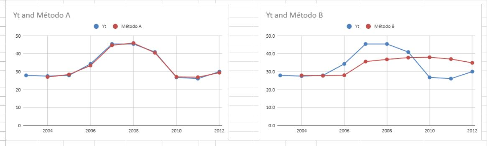

P-1.1 - Facturación anual. Periodo muestrual
La siguiente tabla recoge la serie de facturación anual de un negocio (unidades: miles de €). La tabla contiene las predicciones muestrales y extra-muestrales obtenidas con dos métodos diferentes.
a)Utilizando exclusivamente la información del período muestral, justifique cuál es el método que hace mejores predicciones y diga qué capacidad predictiva tiene.
Link a hoja de cálculoComparando los datos del año 2003 al 2009 (muestra), el MSE del método A tiene un error de 0.3683 frente a un 36.5833 del método B. Por ello, el mejor método es el A, ya que tiene un error menor.
P-1.2 - Facturación anual. Periodo extra-muestrual
b) Se mantiene la ordenación de los métodos si las predicciones se evalúan exclusivamente con los datos del período extra-muestral? ¿Cuál es ahora la capacidad predictiva de lo mejor de ambos métodos?
Comparando los datos extra muestrales (2010, 2011 y 2012), el MSE del método A tiene un error de 0.3683 frente a un 89.42 del método B. Por ello, el mejor método es el A de la misma manera, ya que tiene un error menor.
P-1.3 - Facturación anual. Periodo extra-muestrual
c) Haz dos gráficos de todas las observaciones disponibles: (1) con la serie original (Yt) y las predicciones con el método A; y (2) con la serie original (Yt) y las predicciones con el método B. Comenta los resultados obtenidos y compáralos con los de los apartados a) y b)
Los gráficos nos avalan en lo comentado con los cálculos del MSE, con el método A se observa como la predicción se acerca mucho a la muestra, mientras que el método B difiere mucho más ambas curvas ofreciendo mayor error.
P-2.1 - Serie temporal tipo I. AES(0,3) AES(0,6)
a) Calcula las predicciones con AES(0,3) y AES(0,6). ¿Cuál de los dos métodos es mejor? Evalúa la capacidad predictiva de lo mejor de los dos métodos de predicción. Da resultados para el período muestral y para el período extra-muestral.
Link a hoja de cálculoEn este caso para el cálculo de cada AES hemos implementado el cálculo del Ft, con la predicción en el año anterior más el factor de suavizado según el AES a la diferencia entre el valor real y la predicción del periodo anterior. Comparando los datos de los primeros 4 años (muestra), el MSE del AES(0.6) es mejor, teniendo menor error (8.975) respecto al AES(0.3) que devolvió un error de 11.808. Comparando los datos extra muestrales (años 5 y 6), el MSE del AES(0.6) es mejor, teniendo menor error (9.097) respecto al AES(0.3) que devolvió un error de 12.436. El método AES(0.6) ha demostrado ser bueno tanto en la muestra como con los datos extra muestrales, si se busca determinar cual tiene mejor capacidad predictiva de los dos es el AES(0.6).
P-2.2 - Serie temporal tipo I. MM(2) MM(3)
b) Calcula las predicciones con MM(2) y MM(3). ¿Cuál de los dos métodos es mejor? Evalúa la capacidad predictiva de lo mejor de los dos métodos de predicción. Da resultados para el período muestral y para el período extra-muestral
Link a hoja de cálculoPara el cálculo de la media móvil de orden 2 y 3, hemos tomado los dos/tres valores anteriores a la predicción divididos por su orden Comparando los datos muestrales para los cálculos de las medias móviles, la MM(3) dio un error menor (0.934) respecto a la MM(2) con error de 12.085. Comparando los datos extra muestrales para los cálculos de las medias móviles, la MM(2) dio un error menor (8.433) respecto a la MM(3) con error de 8.948. Los dos métodos han demostrado ser buenos, el MM(3) para los datos muestrales y el método MM(2) ligeramente mejor para los extra muestrales si es el objetivo.
P-2.3 -Serie temporal tipo I. Ingenuo media simple
c) Calcula las predicciones con método ingenuo y método de la media simple. ¿Cuál de los dos métodos es mejor? Evalúa la capacidad predictiva de lo mejor de los dos métodos de predicción. Da resultados para el período muestral y para el período extra-muestral
Link a hoja de cálculoCalculamos el método ingenuo tomando como valor en un periodo el real del periodo anterior, y para la media simple el promedio de todos los periodos anteriores. Comparando los datos muestrales para ambos métodos, el método ingenuo funciona mejor en la muestra con un error de 8.190 respecto al error de 9.670 del método de la media simple. Comparando los datos extra muestrales para ambos métodos, el método de la media simple da un menor error de 8.433 respecto al error de 9.410 del método ingenuo. Si lo que se busca es la capacidad predictiva en años extra muestrales, en este caso el método de la media simple ha demostrado funcionar mejor.